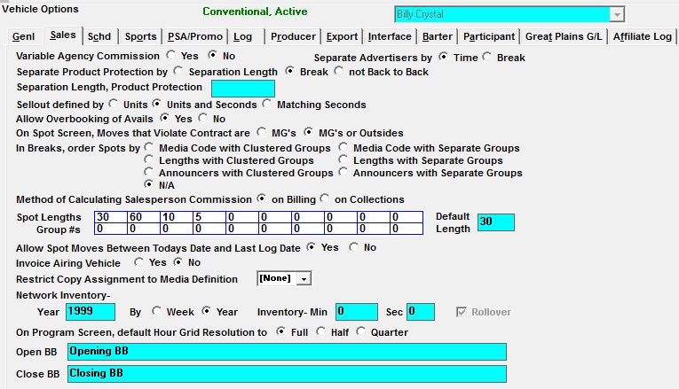
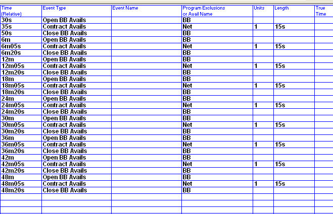
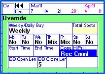
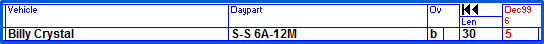
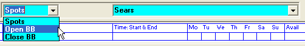

Billboards
The Billboard feature creates virtual open and close billboards (BB) that are ordered with and attached to specific spots. Once scheduled, if the spot is moved, the open and/or closed billboard(s) will automatically move with the spot; they cannot exist without their ordered spot, eliminating the possibility of ‘dangling’ billboards.
The virtual billboards are not scheduled, but are created when key traffic actions occur, running certain reports and generating logs/log exports. There traffic actions can be classified into three groups:
- These actions create billboards, assign copy to billboards, and remove any dangling billboards: Log generation, Automation exports, and the Copy Book report
- These actions create billboards and remove any dangling billboards: Contracts Missing Copy report, Copy Status by Advertiser, Copy Status by Date and Time
- These actions are used to help close the week by making sure copy exists for the billboards and the other spots
- These reports both create and show billboards in the future
- These actions display created billboards for days prior to the last log date: Spots by Advertiser, Spots by Date and Time, Affidavit of Performance, Log Posting Status, Spot Placement
- These reports can be used for various purposes at various times, unlike group 2’s reports, which have the specific task of helping to close the week
- Group 3 reports will bypass any billboards that have been created on future dates (they will not remove or change them, but simply ignore them) even if the billboard option is checked on the report selectivity screen. This is to prevent possible confusion if spots are moved after the report has been generated, but before the log has been generated or the automation export run – as the spots are not considered to be final yet
Set Up
In the Lists Screen, activate the Billboard feature and determine how the Billboards will behave throughout the system. You will need a password from support@counterpoint.net to make some of these changes.
Site Option Tab
In the Site screen, turn on the Billboard feature in the Options (Opt) Tab.
Site Invoice Tab
Check "BBs on Same Line" if you want your spot and BBs on the same invoice line (this reduces the length of your invoices). Leave the question unchecked if you want a separate line for each open and/or close BB, plus the spot. Keep in mind if left unchecked, each spot with Open and Closed Billboards will produce three invoice lines.
Site Options Copy
Separate Copy can be assigned for the ordered Spot and Open and/or Close Billboards. The Site -> Copy Tab question "BB Buy Type: Open/Close or Closest Open or Close BB" determines the copy assignment method. If set to "Open/Close", you can assign separate copy for Open and Close Billboards. If set to "Closest Open or Close BB", the system will assign the copy equally to Billboards. This is used if your Billboards are independent of avails.
Event Types
In the Lists -> Event Types screen, change your events to be ‘in use’ by doing the following for your open and/or close Billboards:
- Select either Open BB Avails and/or Close BB Avails from the dropdown
- Change the In Use field to Yes
Billboard Spots are only created during: Log generation (preliminary, final and log check).
Vehicles -> Options -> Sales
In the Vehicle -> Options -> Sales tab, define the billboard lengths and the custom open BB and close BB wording (if needed).

- There can be multiple BB lengths.
- You can define custom Open BB and Close BB wording that will appear on the Proposals/Contract report, and Insertion Order.
- If you do not wish to enter custom wording, the standard "Open BB" and "Close BB" notation will appear.
Programming BB Avails
Enter the Open and Close Billboard Avails in the programming -> Library screen. These are just placeholders and have no units or lengths. They do not appear on the spot screen and are not counted as part of available inventory.
You can define your Billboards surrounding Contract Avails/Spots, or they can be independent of Contract Avails.
To define Billboards:
- Go to Programming
- Select the vehicle from the dropdown
- Select an existing library or define a new library
- Enter the time for the Open or Close BB, tab
- Define an Event type called Open BB and/or Close BB, tab
- No billboard units or lengths need to be defined, tab
- Tab out of the length, than continue defining where the BB’s should air
- Save the library
- Schedule your new library

Contracts/Proposal BB entry
Since Billboards are sold with spots and not on their own, they do not need a rate card daypart.
To order a Billboard on a proposal or order:
- Enter the schedule lines as normal. For schedule lines with billboards, the Override box has two questions: BB open length and BB close length
- Select the billboard length from the dropdown

- Once you tab out of the Override box, a “b” will be shown in the override column, indicating there are billboards with the spot

If the client is charged for the billboards, the billboard rate must be rolled into the average rate of the commercial spot
Research is not affected by the billboards; they are ignored in all research audience calculations
Spots
The billboards do not appear on the spot screen, do not take up actual inventory, and do not need to be trafficked. They will be created when logs are generated.
Copy Entry
Copy rotations and inventory are entered for the Open, Close Billboards, and the commercial spot.
In the Copy Screen, select the advertiser. Depending on your Site -> Copy setting, change the dropdown to the left of the advertiser from “Spots” to “BB”, “Open BB” or “Close BB”. You must define separate copy for the Open BBs, Close BBs, and spots, for copy to appear on the log and invoice, even if the copy is the same.

The Contracts Missing Copy Report will include the billboard open/close spots that are missing copy as well as the commercial spot and the Copy Status by Date or Advertiser will show the placement of the billboard spots.
Logs or Automation Export
When Logs are generated (Preliminary, Final, or Reprint), and/or when an export is sent to Automation equipment, the actual billboard spots will be created for any spot that was ordered with an open/close billboard.
Whenever a Log is reprinted, all BBs will be regenerated accordingly, to handle the various cases of spots being moved, swapped, added, or deleted. Billboards are never created for past dates, so if the log is printed in the past for the first time, billboards will not be created.
Billboard copy is assigned to BBs at the same time it is assigned to regular spots.
The Log Check program will look for Billboard copy missing.
Even though Billboards appear on the log, they are not sent to the Affiliate System.
Post Log
When spots are imported from Automation, the times on billboards are updated automatically.
You can change the aired date or time of billboard spots in Post Log the same way any spot date/time is changed.
Since Billboard spots are tied to the commercial spot, if the spot for the billboards is missed, the billboards will automatically be removed. Billboards cannot be missed; they will be erased.
Reports
The following reports show the billboards:
- Affidavit of Performance
- Audience Delivery report
- Average Rate Report will note billboards next to the schedule line
- Contract History will note billboards are ordered
- Contracts Missing Copy will include billboard spots in the missing copy counts
- Copy Status by Advertiser will list the billboard spots
- Copy Status by Date will list the billboard spots
- Copy Rotations will show the open or close bb rotations
- Hi/Lo Rate
- Insertion Orders will note those lines that have billboards defined
- Invoice will list the billboard spots
- Logs will show OBB/CBB before the advertiser name
- Log Posting Status
- Missing ISCI Codes will show any billboard spots missing ISCI
- Post Buy Analysis
- Proposal/Contracts will show billboard notations on the lines
- Spots by Advertiser
- Spots by Date and Time
- Spot Discrepancy